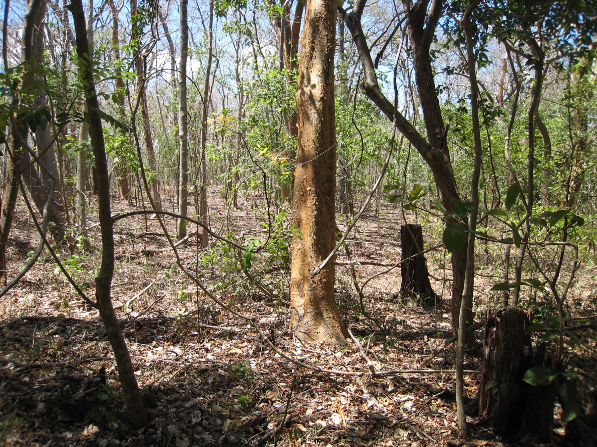

Plot overview
Site setting and sampling record
The San Emilio Forest Dynamics Plot is in Sector Santa Rosa of Área de Conservación Guanacaste, Guanacaste Province, Costa Rica, at 10.839379° N, 85.613550° W. It is seasonally dry tropical forest with a wet season from June through December, a dry season from January through May, and approximately 1,500 mm of annual rainfall.
The plot includes ridge, slope, mesa-top, and valley-bottom habitats. The ForestGEO profile describes roughly one-third as approximately 100-year-old secondary forest on land formerly used for cattle grazing and banana cultivation, another third as likely 120–170 years old, and the remainder as intermediate in age. These are inferred relative age classes rather than exact establishment dates.
ForestGEO profile metadata report approximately 34,000 trees and 176 species. The profile does not define whether these totals include lianas, multiple stems, unidentified taxa, or only accepted tree species. The project presentation separately reports 36,465 stems at least 1 cm DBH and 145 species for the recent survey; the totals should not be treated as interchangeable until their counting and taxonomic definitions are reconciled.
ForestGEO lists a census area of 15.64 hectares and nominal dimensions of 240 × 680 m. A complete rectangle with those dimensions would cover 16.32 hectares, so the dimensions are presented here as approximate bounds rather than an area calculation. Earlier surveys covered a reported 14.4 hectares.
Source: ForestGEO San Emilio profile, accessed 31 July 2026.
